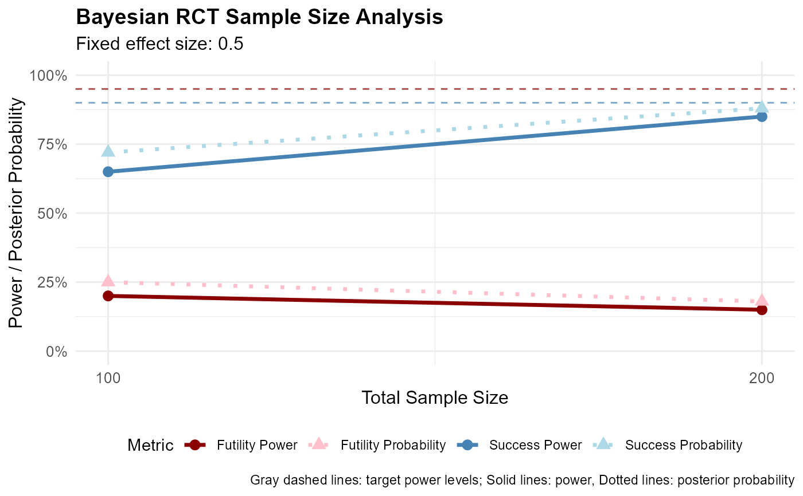
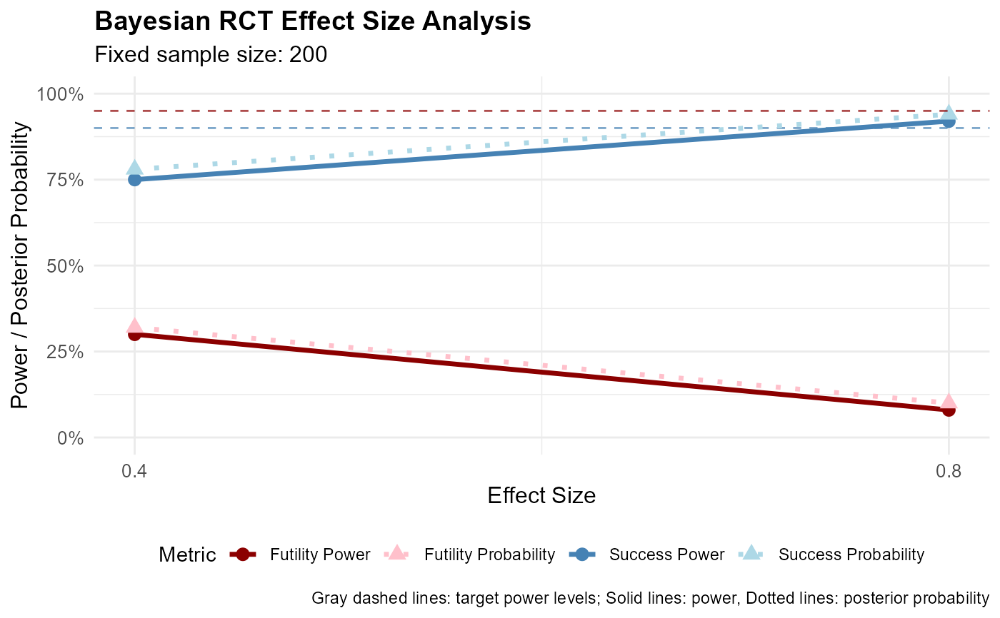
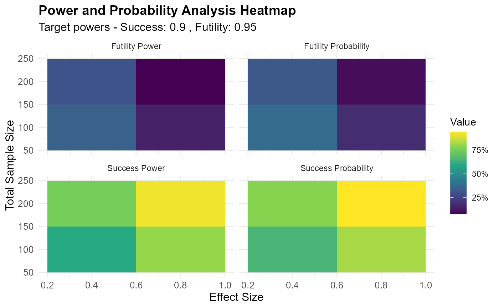
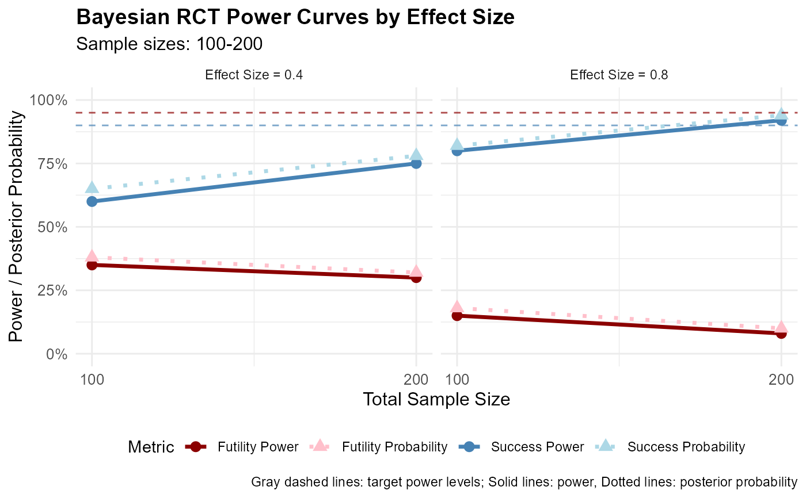
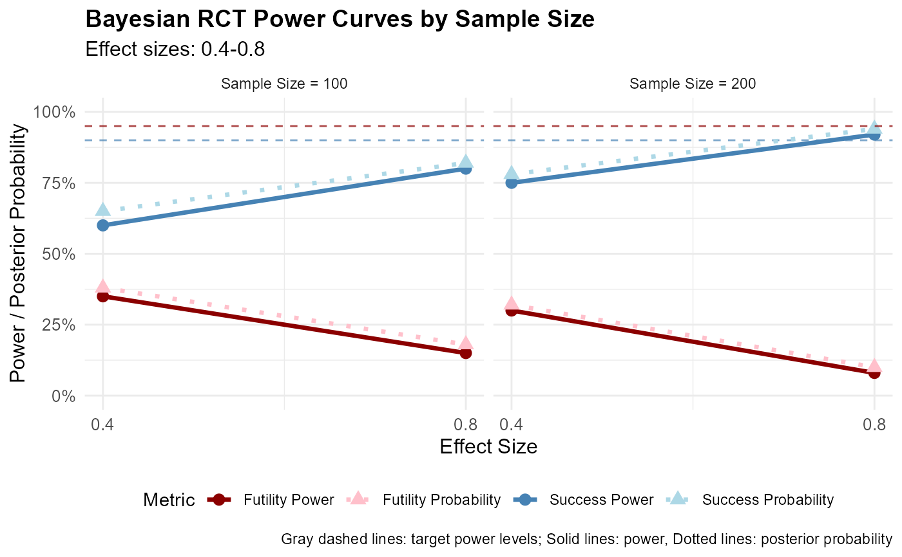

Plot Power Grid Analysis Results
plot.rctbayespower_grid.RdCreate comprehensive visualizations for power grid analysis results from power_grid_analysis(). Supports different plot types based on analysis type (sample_only, effect_only, or both varying).
Usage
# S3 method for class 'rctbayespower_grid'
plot(
x,
type = "auto",
metric = "both",
values = "both",
show_target = TRUE,
show_integrated = TRUE,
facet_by = "effect_size",
...
)Arguments
- x
An object of class 'rctbayespower_grid' returned by power_grid_analysis()
- type
Type of plot to create:
"auto" - Automatically detect best plot type based on analysis (default)
"power_curve" - Power curve across single varying dimension
"heatmap" - 2D heatmap when both sample sizes and effect sizes vary
"integrated" - Integrated power results when design prior is used
"comparison" - Compare power vs posterior probabilities
- metric
Which power metric to display:
"success" - Success power and probability
"futility" - Futility power and probability
"both" - Both success and futility power and probabilities (default)
- values
Which values to display:
"both" - Both power and posterior probabilities (default)
"power" - Power only
"post_prob" - Posterior probabilities only
- show_target
Whether to show target power lines (default: TRUE)
- show_integrated
Whether to include integrated power when available (default: TRUE)
- facet_by
For power_curve plots when both sample sizes and effect sizes vary:
"effect_size" - Facet by effect size, vary sample size on x-axis (default)
"sample_size" - Facet by sample size, vary effect size on x-axis
- ...
Additional arguments passed to ggplot2 functions
Examples
# \donttest{
# Sample size analysis plot
grid_result <- list(
target_power_success = 0.9,
target_power_futility = 0.95,
threshold_success = 0.2,
threshold_futility = 0,
sample_sizes = c(100, 200),
effect_sizes = 0.5,
design_prior = NULL,
analysis_type = "sample_only",
power_surface = data.frame(
n_total = c(100, 200),
effect_size = c(0.5, 0.5),
power_success = c(0.65, 0.85),
power_futility = c(0.20, 0.15),
mean_prob_success = c(0.72, 0.88),
mean_prob_futility = c(0.25, 0.18)
),
integrated_power = NULL,
optimal_combinations = data.frame(),
detailed_results = list()
)
class(grid_result) <- "rctbayespower_grid"
plot(grid_result) # Auto-detects power curve

# Effect size analysis plot
grid_result <- list(
target_power_success = 0.9,
target_power_futility = 0.95,
threshold_success = 0.2,
threshold_futility = 0,
sample_sizes = 200,
effect_sizes = c(0.4, 0.8),
design_prior = NULL,
analysis_type = "effect_only",
power_surface = data.frame(
n_total = c(200, 200),
effect_size = c(0.4, 0.8),
power_success = c(0.75, 0.92),
power_futility = c(0.30, 0.08),
mean_prob_success = c(0.78, 0.94),
mean_prob_futility = c(0.32, 0.10)
),
integrated_power = NULL,
optimal_combinations = data.frame(),
detailed_results = list()
)
class(grid_result) <- "rctbayespower_grid"
plot(grid_result) # Shows both success and futility, both power and probabilities

# Full grid heatmap
grid_result <- list(
target_power_success = 0.9,
target_power_futility = 0.95,
threshold_success = 0.2,
threshold_futility = 0,
sample_sizes = c(100, 200),
effect_sizes = c(0.4, 0.8),
design_prior = NULL,
analysis_type = "both",
power_surface = data.frame(
n_total = c(100, 200, 100, 200),
effect_size = c(0.4, 0.4, 0.8, 0.8),
power_success = c(0.60, 0.75, 0.80, 0.92),
power_futility = c(0.35, 0.30, 0.15, 0.08),
mean_prob_success = c(0.65, 0.78, 0.82, 0.94),
mean_prob_futility = c(0.38, 0.32, 0.18, 0.10)
),
integrated_power = NULL,
optimal_combinations = data.frame(),
detailed_results = list()
)
class(grid_result) <- "rctbayespower_grid"
plot(grid_result, type = "heatmap")

# Power curves faceted by effect size (when both vary)
plot(grid_result, type = "power_curve", facet_by = "effect_size")

# Power curves faceted by sample size (when both vary)
plot(grid_result, type = "power_curve", facet_by = "sample_size")

# }